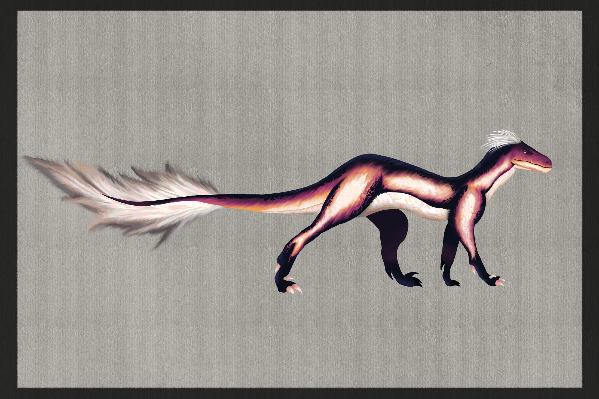
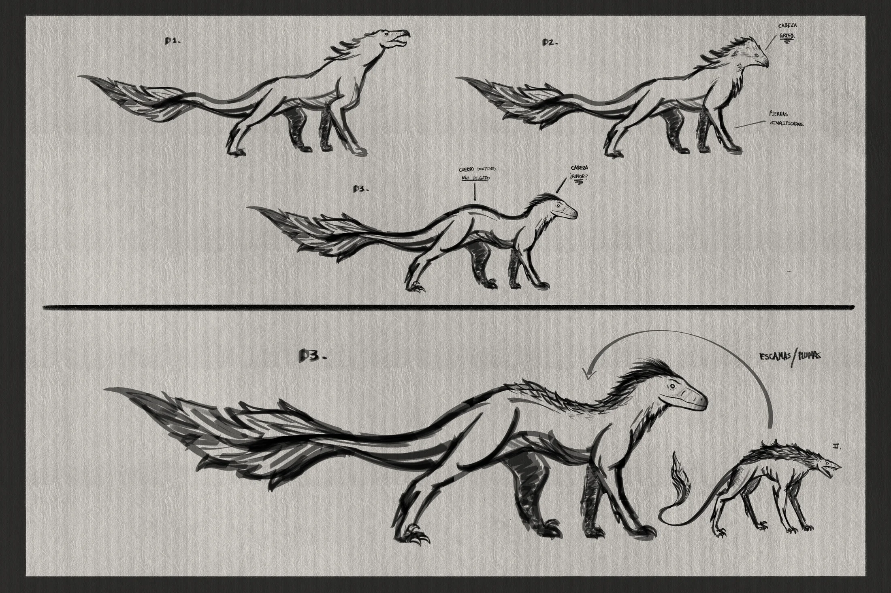
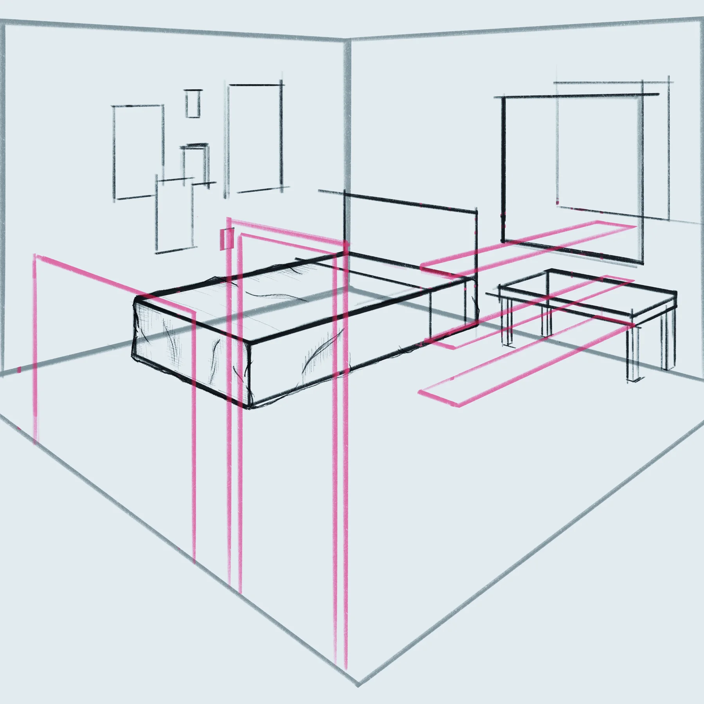

A short film of about five minutes, in development, planned for submission to different festivals. The title has not been announced yet.
The film combines different animation techniques. I contribute to the 2D side of the production, developing concept art and animation.
- RoleConcept art and 2D animation
- StyleMixed techniques
- LengthAbout 5 minutes
- TeamPanteras UP, Animation group
- StatusIn development
- GoalFestival submissions

Concept art
Work in progress. Subject to change.


Animation tests
Rough pass of the walk cycle, before the clean version above.